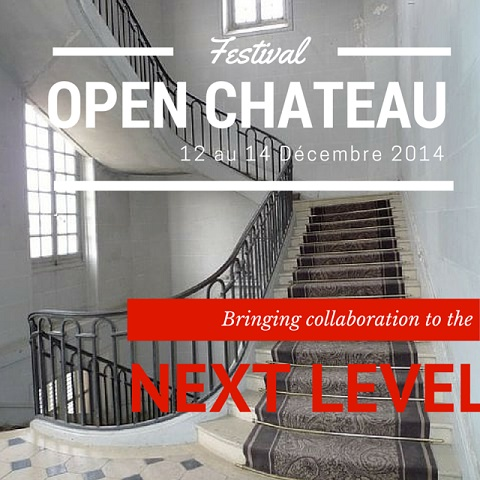
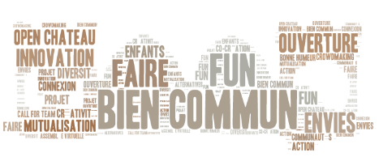
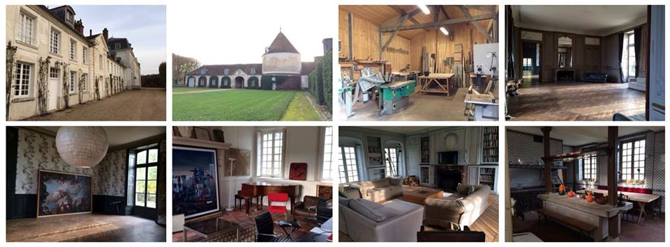

Vivez le crowdmaking !
Venez participer à un week end de 3 jours dans un lieu atypique autour de nombreux collectifs pour construire nos projets respectifs et surtout des ponts pour les relier. Chaque collectif invite sa communauté à se mobiliser pour travailler ensemble sur des projets concrets et originaux en cours de prototypage ou de conception. Il s’agit de travailler ensemble à la construction de PROJETS COMMUNS, tout en préservant l’identité et l’individualité de chacun. Ce "projet commun" s'initie et se dessinera au château de Millemont pendant ces 3 jours, et il se développera au delà du week-end.
La place de l'humain
Au cœur de la démarche, la nécessité de décloisonner les murs des communautés, de relier les porteurs de projets et leur communauté les uns aux autres, de se faire connaitre, et d’inciter les membres à se revendiquer d’autres collectifs portant les mêmes valeurs. Plus exactement, à ne se revendiquer de plus aucune communauté, si ce n’est la communauté de ceux qui passent à l’action, qui réalisent des projets concrets et réels.
L’Homme aime AGIR !
...mais notre société ne lui en donne que tellement rarement les moyens !
Au travers de cette démarche, nous ouvrons grand les portes à toute la Société, toute classe d’âge confondue, afin qu’elle se mobilise pour rejoindre des projets démarrés ou à créer, partout sur le territoire et à l’international.
La démarche démarre avec l’openChateau #1, au château de Millemont.
Comment ?
Pendant 3 jours, chaque collectif ou startup présente son projet, son cas d’étude ou ses enjeux personnels. Les projets feront ensuite l’objet d’ateliers qui vont durer de manière temporaire voire et jusqu’à 3 jours, et au bout desquels prototypes, projets, idées et pleins d’autres productions sortiront. Les participants au week end sont invités à s’inscrire aux ateliers pour un moment fun et s’ils le souhaitent encore ils pourront même suivre les projets et y participer après l’évènement en équipes projets.
Quand ?
Premier d'une longue série, cet évènement sera périodique et se déroule sur un WE de 3 jours du vendredi 12 au dimanche 14 Décembre 2014
Combien ?
Tarifs :
- Pass 3 jours : 60€
- Pass 2 jours : 45€
- Entrée journée : à partir de 15€
Nourriture : Les repas sont inclus pour les personnes ayant souscrit au forfait 1 journée à 25€, forfait 2 jours, forfait 3 jours. Possibilité de venir avec sa nourriture pour les personnes n'ayant pas souscrit l'option "repas inclus"
Boisson : L'alcool pour les soirées n'est pas inclus. Vous pouvez ramener ce qui vous fait plaisir !
Dodos : Possibilité de dormir sur place si vous prenez le nécessaire (sac de couchage, couvertures, oreillers...). Un dortoir sera aménagé avec des tatamis.
Où ?
Le Château de Millemont, dans les Yvelines : un lieu atypique et fédérateur.
- Accès en voiture : Le Château, 78940 Millemont (30 mn de la porte de Saint Cloud)
- En co-voiturage :une plate-forme va être mise en place, en attendant rdv sur la page facebook pour proposer vos trajets
- Train : Transilien ligne N direction Dreux - station Garancières - La Queue (42mn depuis Montparnasse), 1 train par heure le WE. Des navettes seront mises en place entre la gare et le château.
Pour plus d'infos sur l'accès et les transports, n'hésitez pas à nous écrire à :

Important
Amenez de quoi vous protéger du froid ... Duvets (Bons duvets si vous envisagez de dormir dans le grand chateau), gros pulls, couvertures éventuellement.
Venez en train avec votre vélo ... c'est possible !
Le Programme
Le BarCamp openChateau
Un bar camp se tiendra tout au long des trois jours pour vous permettre de proposer vos projets, d'explorer des voies innovantes et développer de nouvelles visions
Des ateliers permanents
- Réinventons la montagne
- Les chemins de la transition
- Cartographie sémantique
- OpenTeam
- Villes concrètes
- Les modèles juridiques de l'économie collaborative
Des tables rondes
- EtikInfo / Call for team : une économie collaborative ET équitable
- Symba : Monnaie régionale B2B
- Symba : valoriser le temps donné aux communautés
- Cobusiness : Et si toutes les ressources étaient des monnaies d'échange ? Le troc 3.0
Dimension numérique
Plusieurs salles de développement informatiques seront installées pour travailler sur des applications web et mobile, parmi lesquelles deux projets emblématiques
- Cartographie sémantique des projets, acteurs, idées et ressources disponilbes dans ce projet commun
- Référentiel de compétences « open LinkedIn », dans lequel seront déversées les communautés de chaque collectif : objectif, pourvoir maximiser l'accès aux compétences dont on a besoin pour un projet collaboratif.
Dimension ludique et récréative
- Dimanche, on brasse notre propre bière à Millemont ! Hic ! c'est chouette ca !!! Ca vous tente ?
- Des activités ludiques seront organisées sur place et le temps sera aussi à la relience avec la nature omniprésente sur le domaine de 600 hectares dans lequel on peut librement se promener.
- Expo photo
- Des ateliers photos seront proposés
- Des documentaires sur l’évolution de notre société seront projetés :
- L'urgence de ralentir, par Philippe Borrel
- En quête de sens, par Marc de la Ménardière et Nathanaël Coste
- Libérez la création (vidéo de sensibilisation à l'entreprenariat)
- Vendredi une soirée concert
- Samedi une soirée DJ
Liste des partenaires
- Assemblée Virtuelle
- Call for team
- EGPC
- Sommet de Millemont
- Villes concrètes
- Réinventons la Montagne
- Les Ptits Debrouillards
- Without Model
- Sharelex
- Social Express
- Coab
- NOISE
- Symba
- Libérez la Création
- Chèques solidaires/openCommerce
- Ekitinfo
- Food for health and happiness
- Cobusiness / My Recycle Stuff
- TransitionGeneveRegion

Hébergement et alimentation
Il est possible de dormir au château
- Petit château :
- 10 grandes chambres à l'étage 1 qui sont normalement fermées car dédiées à de l’hôtellerie. Pour ce coups ci, elles pourraient être ouverte sous une approche sponsor de l'évènement
- Grand château : 44 tatamis qu'on peut mettre par terre et au frais ...
- L'alimentation sera collaborative, des équipes seront formées la première semaine de Décembre pour s'occuper de tout ce qui s'y affaire.
- ATTENTION : l'alcool est autorisé sur place mais ne sera pas fourni par l'organisation. Merci d'apporter ce qui vous fait plaisir !
Tournage vidéo pour deux reportages
- Docu et webdocu / Nadya Charvet (France 5)
- Nouveau documentaire de Philippe Borrel (Arté)